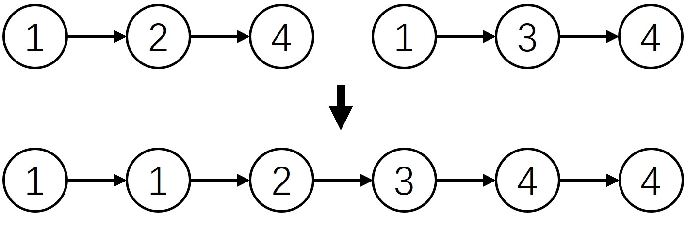

319 树的层序遍历
- 层序遍历流程
- 实现
层序遍历流程
层序遍历很简单，就是按照层级进行遍历的，如下图所示，按照层序遍历结果很明显，第一层为1，第二层为2,3,第三层为4,5

为了完成层序遍历，常需要辅助队列:
-
首先把根结点root放入队列中, 在搜索的每一轮中，记录下当前队列中包含的结点个数
- 从队列中依次取出结点，直到取出了上一层的全部结点为止，将结点值放入临时列表，再将子结点放入队列中
- 依次重复上述过程，直到遍历完成
实现
from collections import deque
class TreeNode:
def __init__(self, val=0, left=None, right=None):
self.val = val
self.left = left
self.right = right
tree = TreeNode(1, TreeNode(2), TreeNode(3))
tree.left.left = TreeNode(4)
tree.left.right = TreeNode(5)
def levelOrder(root):
levelOrder = list()
if not root:
return levelOrder
q = deque([root])
while q:
level = list()
size = len(q)
for _ in range(size):
node = q.popleft()
level.append(node.val)
if node.left:
q.append(node.left)
if node.right:
q.append(node.right)
levelOrder.append(level)
return levelOrder[::1]
print(levelOrder(tree))
小结
理解辅助队列在遍历中起的作用
掌握树的层序遍历方法
习题
- 如果需要第一层从左往右遍历，第二层从右往左遍历这样交替进行，需要什么数据结构？
- 你觉得先序遍历和层序遍历各有什么优缺点？
打赏
赠人玫瑰，手有余香。您的打赏是我们前进的动力！